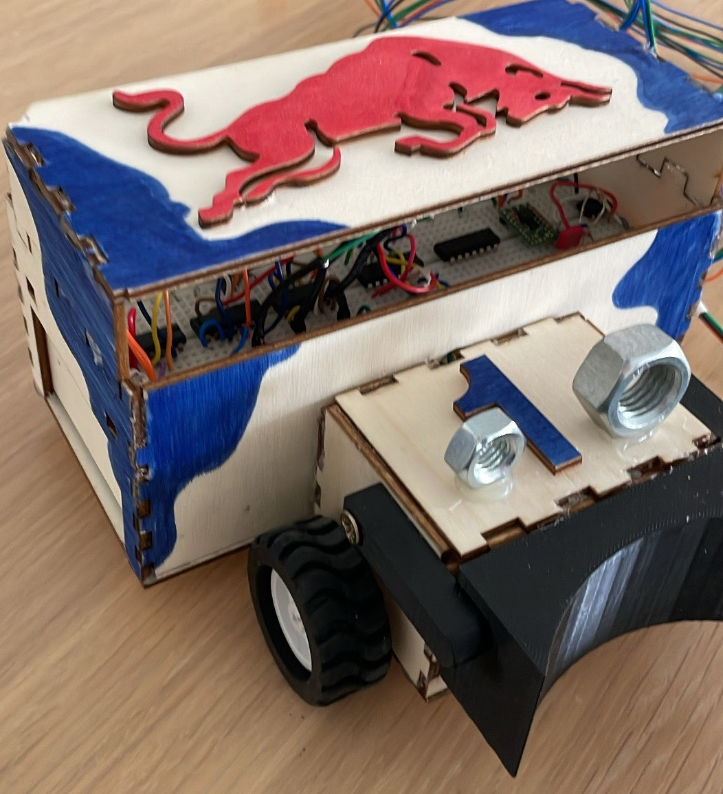

Description du Projet
✅ L'objectif était de concevoir une voiture guidée par un câble, de A à Z, pour évoluer dans un parcours fermé et marquer des points.
👥 Projet réalisé en équipe de 4, avec répartition des tâches, communication constante et suivi de l'avancement pour respecter les exigences techniques.
🛠️ Cette réalisation combine mécanique, électronique et pilotage, avec une attention particulière portée à la solidité, au poids et à la fiabilité.
Objectifs
🎯 Les principaux objectifs du projet :
- 📋 Organisation du projet et répartition des tâches
- 🧩 Modélisation 3D et schémas de câblage
- 🔧 Tests, ajustements et assemblage du prototype
- 🚀 Mise en service d'un système fiable et autonome
Technologies Utilisées
🧰 Outils et technologies employés :
- 💻 OnShape, impressions 3D et découpeuse laser
- 🔌 Électronique analogique et câblage embarqué
- ⚙️ Analyse mécanique et ajustements structurels
Résultats et Réalisations
Point clé : Le robot fonctionne correctement dans l'environnement cible et le système de guidage est stable.
✅ Le robot se déplace avec précision en suivant les commandes du système filaire.
⚠️ Une mauvaise répartition du poids a entraîné un patinage initial, corrigé par un ajustement mécanique et électrique.
💡 Cette étape a permis d'apprendre la valeur des tests pratiques et de l'optimisation continue.



Conclusion
🎓 Le projet a renforcé notre capacité à travailler en équipe, à gérer un planning et à résoudre des problèmes techniques en temps réel.
🚀 Il nous a aussi permis de mieux comprendre les contraintes de la mécatronique appliquée et d'améliorer nos choix de design pour les prochaines versions.